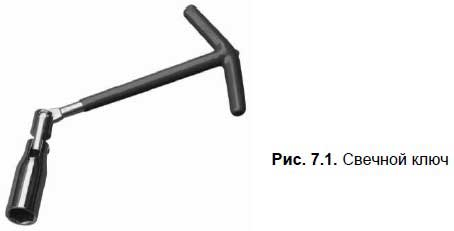
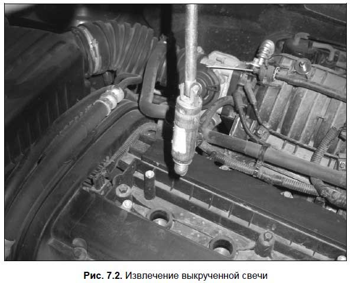
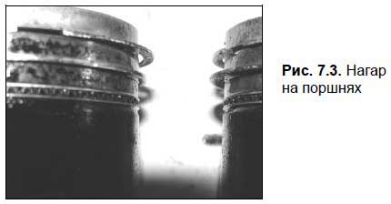
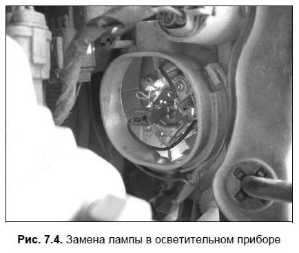
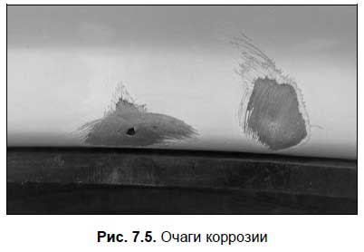
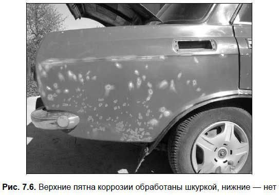
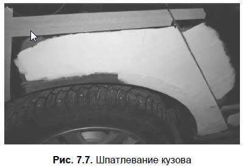

Устранение мелких неисправностей своими руками
Каждый водитель должен уметь своими руками устранять мелкие неисправности — хотя бы потому, что какая-то поломка может случиться в дороге, и до ее устранения дальнейшее движение будет невозможным. Кроме этого, услуги автосервиса стоят недешево, поэтому какую-то мелочь лучше исправить самому, чтобы не переплачивать за мелкий ремонт на СТО.
В данной главе мы расскажем о том, как устранять наиболее распространенные мелкие неисправности своими руками.
Как самостоятельно заменить свечуНа первый взгляд может показаться, что замена свечи — пустяковая операция, не представляющая собой никакой сложности. Это опасное заблуждение, и небрежность при выполнении данной операции может стать причиной выхода из строя не только свечи, но и головки блока цилиндров.
Чтобы снять свечу с двигателя, нужно действовать в следующей последовательности.
1. Убедитесь в том, что двигатель остыл (процедуру можно проводить только на холодном моторе), а также в том, что зажигание выключено.
2. Снимите наконечник провода высокого напряжения (помните, что за сам провод тянуть нельзя!).
3. Очистите поверхность в углублении головки цилиндра вокруг свечи кистью либо сжатым воздухом. Это позволит предотвратить попадание грязи в цилиндр.
4. Выверните свечу, используя для этого специальный свечной ключ (рис. 7.1).

5. Извлеките свечу (рис. 7.2).

6. Обязательно проверьте, имеется ли уплотнительное кольцо на цоколе корпуса свечи (дело в том, что иногда оно остается на двигателе).
7. Внимательно осмотрите свечу на предмет наличия механических повреждений, причем особенно тщательно проверьте изолятор. Посмотрите, в каком состоянии находятся электроды, а также — нет ли «мостика» в искровом зазоре.
Чтобы установить свечу, действуйте следующим образом.
1. Убедитесь в том, что двигатель остыл (процедуру можно проводить только на холодном моторе), а также в том, что зажигание выключено.
2. Проверьте маркировку свечи (можно ли ее использовать на данном двигателе).
3. Проверьте свечу на предмет наличия механических повреждений (это необходимо сделать, даже если вы устанавливаете только что купленную новую свечу).
4. Если предусмотрено использование уплотнительного кольца и контактной гайки — проверьте их наличие.
5. Проведите замер расстояния между электродами, и если оно не соответствует расстоянию, указанному в руководстве по эксплуатации — отрегулируйте его.
6. Вручную заверните свечу до упора в предназначенное для нее гнездо.
7. Плотно зажмите свечу с помощью специального свечного ключа.
Следует учитывать, что резьба может иметь механические повреждения (попросту говоря, она иногда «срывается», и завернуть свечу не удается). Причем это касается как самой свечи, так и гнезда, в которое она устанавливается. В гнезде резьба повреждается обычно по следующим причинам.
? Применение свечного ключа, конструкция которого не позволяет правильно зафиксировать свечу, как следствие — при монтаже свечи происходит ее перекос.
? Попадание в резьбу грязи.
? Слишком сильная затяжка свечи (прилагаемое усилие должно соответствовать стандарту, об этом можно почитать в руководстве по эксплуатации автомобиля).
Сорванную резьбу можно восстановить. При этом необходимо обеспечить соосность старого и нового резьбовых отверстий, а также строго соблюдать допуски всех размеров.
Учтите.
Не рекомендуется перед монтажом свечи покрывать резьбу графитом или иным смазочным материалом, поскольку при сильной затяжке свечи это может стать причиной потери герметичности соединения, деформации корпуса или повреждения резьбы. Помните, что при наличии смазки изменяется момент затягивания. И вообще — современные никелированные свечи не нуждаются в смазке.
Если при монтаже свечи она закручивается с трудом, не прилагайте излишних усилий — можно сломать свечу или повредить резьбу (как на свече, так и в ее гнезде).
Полезный совет.
Для решения проблемы иногда достаточно немного поправить резьбу в гнезде свечи. Поскольку метчик нужного размера под рукой имеется далеко не всегда, берите старую свечу (но с исправной резьбой!) и ножовкой либо иным подходящим инструментом сделайте четыре продольных паза на ее резьбовой части перпендикулярно виткам резьбы. Такой «самопальный метчик» поможет вам исправить резьбу в гнезде.
Некоторые водители устанавливают свечи без уплотнительного кольца или, наоборот — с двумя уплотнительными кольцами. Учтите, что так делать категорически не рекомендуется, поскольку такой монтаж становится причиной нарушения герметичности соединения свечи с головкой блока цилиндров. При слишком длинной резьбе свеча далеко «входит» в камеру сгорания, в результате чего перегревается. На выступающей части свечи появляется нагар, а при ее демонтаже можно повредить резьбу головки блока цилиндров.
При слишком короткой резьбе возникает обратный эффект — свеча недостаточно входит в камеру сгорания. В данной ситуации заметно усложнится воспламенение горючей смеси, а на нижних витках резьбы головки блока цилиндров появится нагар, из-за чего установить впоследствии свечу с более длинной резьбой станет сложно. Отметим, что некоторые водители используют свечи с искусственно укороченной резьбой для того, чтобы перевести мотор на более низкооктановое топливо. Знайте, что данный способ не имеет смысла: при установке таких свечей степень сжатия почти не меняется, а вот использование топлива, не предназначенного для данного автомобиля, может привести к серьезным неполадкам в моторе и других агрегатах.
Устранение засорения или течи из радиатораЕсли радиатор засорился, то для устранения неисправности бывает достаточно промыть его сильной струей воды, подавая ее в направлении, обратном обычной циркуляции охлаждающей жидкости. Промывать следует до тех пор, пока выходящая вода не станет чистой. Если вы будете выполнять эту операцию самостоятельно, следует учитывать, что перед промывкой радиатор необходимо снять (нельзя промывать его вместе с двигателем).
Кроме этого, для промывки радиатора можно использовать специальные химические растворы (например, «Икар» и т. п.), которые продаются на автомобильных рынках и в автомагазинах. Эти растворы разрушают и вымывают посторонние отложения.
Течь радиатора тоже несложно устранить: например, отверстие можно запаять. Кроме этого, в продаже имеются специальные таблетки, позволяющие заделать дыру в радиаторе: достаточно бросить эту таблетку в радиатор, и через некоторое время отверстие исчезнет.
Автолюбители со стажем наверняка помнят известный способ заделывания отверстий в радиаторе, широко используемый в советское время. В радиатор бросали сигарету и заводили мотор. Сигарета циркулировала вместе с охлаждающей жидкостью и, подчиняясь законам физики, устремлялась к отверстию. Если отверстие небольшое, то сигарета просто «забивала» его, и течь радиатора прекращалась. Правда, все перечисленные способы подходят только для устранения относительно небольших отверстий. Если же в вашем радиаторе образовалась приличная «дыра» — его однозначно придется менять.
Как заменить колесоЗамена колеса — это процедура, которую должен уметь делать любой водитель. Напомним, что в любом автомобиле обязательно должно иметься исправное запасное колесо.
Итак, если вы почувствовали, что машина ведет себя непонятно (ее «тянет» в сторону, возникает вибрация и т. п.), включите аварийную сигнализацию, остановитесь и проверьте состояние колес. Скорее всего, одно из них спустило, и его придется менять.
Перед тем как приступить к замене колеса, рекомендуется убрать автомобиль с проезжей части. Но учтите, что большое расстояние ехать на приспущенном колесе не рекомендуется, а если оно спустило полностью — и вовсе нельзя (иначе колесный диск повредит резину так, что ее останется лишь выбросить).
Остановившись, подложите под одно из колес на противоположной стороне машины противооткатные упоры с двух сторон (в качестве таких упоров можно использовать камни, кирпичи, деревянные бруски и т. п.). Если на спустившем колесе установлен декоративный колпак — снимите его, затем возьмите баллонный ключ и примерно на пол-оборота ослабьте крепежные болты (гайки) на колесе.
После этого берите домкрат и поднимайте на нем автомобиль. При установке домкрата обращайте внимание на то, чтобы он стоял на твердой поверхности, а в случае надобности подложите под него прочную доску. Также учтите, что поднимать кузов нужно в том месте, которое специально для этого предназначено. Например, в старых «Жигулях» для этого к днищу кузова было приделано специальное гнездо, в которое вставлялась «лапка» домкрата. В большинстве современных машин такого нет, и нужно просто найти прочное место в нижней части порога или на днище кузова.
Поднимать автомобиль нужно до тех пор, пока спущенное колесо не будет свободно вращаться. После этого полностью открутите предварительно ослабленные болты (гайки) и снимите колесо. Затем установите на его место запасное колесо, и рукой закрутите крепежные болты (гайки), после чего подтяните их баллонным ключом (но не изо всех сил, поскольку окончательная подтяжка будет производиться после снятия машины с домкрата).
Важно.
Закручивать крепежные болты (гайки) нужно не по окружности, а в перекрестном порядке — в противном случае можно перекосить колесо.
Затем опустите домкрат и сильно затяните крепежные болты (гайки). Для этого рекомендуется встать на баллонный ключ ногой.
После замены колеса не забудьте убрать с противоположной стороны машины поставленные ранее противооткатные упоры.
Как быстро заделать прокол колесаОднако бывает так, что заменой колеса решить проблему невозможно. Самый характерный пример — когда пробивается сразу два колеса (например, машина двумя колесами наехала на один и тот же гвоздь), или когда обнаружилось, что запасного колеса нет или оно неисправно.
В таком случае можно попытаться устранить прокол колеса своими силами, чтобы была возможность доехать хотя бы до автосервиса или до населенного пункта (если вы находитесь за городом).
Обнаружив спущенное колесо, прежде всего убедитесь в том, что прокол все же существует. Для этого накачайте колесо, поднимите машину на домкрат и покрутите колесо, при этом внимательно осматривая его. Если на резине вы не обнаружили ни прокола, ни инородных предметов — попробуйте ехать дальше: возможно, все и обойдется. Если же в протекторе вы нашли инородный предмет (шуруп, гвоздь и т. п.) — колесу нужен ремонт.
Если на данном колесе используется радиальная бескамерная шина, можете попытаться доехать до ближайшей шиномонтажной мастерской, подкачав колесо. Но учтите, что ехать большое расстояние на таком колесе нельзя — это может лишь усугубить ситуацию.
Следовательно, придется устранять неисправность на месте. Для этого вам потребуется: спиральное шило, специальная игла с ушком, пропитанные жгуты и тюбик клея.
Учтите, что ремонт колесной резины — операция тонкая, требующая внимания и осторожности. Самое трудное — найти правильный угол наклона отверстия, чтобы на внутренней стороне покрышки не появилось вместо одной дырки две (одна — полученная при проколе во время движения, вторая — сделанная вами при попытке отремонтировать колесо). Именно поэтому вам потребуется не обычное шило, а спиральное. Вводить его нужно постепенно, нащупывая путь наименьшего сопротивления. Торчащие в месте повреждения стальные нити оборванного корда необходимо убрать, иначе при движении автомобиля они будут отслаивать заплату.
Ремонтный жгут, смазанный клеем, вводится шилом в отверстие до того момента, пока ручка не упрется в протектор. Колесо перед этим можно немного подкачать до 0,2–0,3 атмосфер — так будет удобнее работать. После ввода жгута приспособление поворачивается на 90° и резко выдергивается — в результате изнутри образуется петля. Выступающую часть нужно срезать, оставив на «усадку» примерно 2–3 мм жгута.
Учтите.
Данный метод можно использовать только при условии, что диаметр отверстия не превышает 6 мм. В противном случае устранить прокол можно только в шиномонтажной мастерской. И еще один важный момент: с помощью этого способа можно ремонтировать только беговые дорожки протектора, но ни в коем случае не боковины покрышки.
Если после проведенного ремонта давление воздуха в шине держится стабильно и не снижается, можно ездить несколько дней. Но все равно такой ремонт — не более чем временная мера, поэтому в шиномонтажную мастерскую все равно придется обратиться. Но в экстренных случаях данный метод очень даже эффективен.
Для устранения проколов можно воспользоваться специальным спреем типа Long Way («Лонгвэй»). Он продается в автомагазинах и на автозаправочных станциях.
Спрей через вентиль заливается внутрь покрышки под давлением баллона, тем самым накачивая колесо. Растекаясь, жидкость заполняет пробоину и создает изнутри дополнительный термослой. Учтите, что инородный предмет, являющийся причиной прокола, следует извлечь до применения спрея!
После наполнения шины герметиком ее необходимо докачать до рабочего давления. При движении герметик равномерно распределится по внутренней поверхности при вращении колеса, прекратив утечку воздуха.
Регулировка холостого ходаЕсли мотор работает на повышенных холостых оборотах, он расходует больше топлива. В этом разделе мы расскажем о том, как самостоятельно выполнять регулировку холостого хода на карбюраторных машинах.
Регулировка холостого хода осуществляется с помощью регулировочных винтов качества и количества рабочей смеси, подаваемой в цилиндры двигателя.
Важно.
Регулировать холостой ход следует на предварительно прогретом двигателе (т. е. температура охлаждающей жидкости должна быть порядка 90 градусов), при полностью открытой воздушной заслонке карбюратора. Нормальная регулировка возможна только при правильно установленном моменте зажигания. Также должны быть полностью исправными и работоспособными свечи зажигания, а все зазоры в механизме газораспределения — должным образом отрегулированы.
Автомобилисты с многолетним опытом легко могут регулировать холостой ход на слух, руководствуясь тем, как работает двигатель. Однако лучше все же это делать с помощью тахометра. На старых автомобилях штатные тахометры отсутствуют, поэтому их владельцам приходится подключать внешние измерительные приборы (помните, что делать это можно лишь при выключенном зажигании). Затем с помощью винта, предназначенного для регулирования количества горючей смеси, устанавливаем требуемую частоту вращения коленчатого вала, ориентируясь по показаниям тахометра. После этого винтом, предназначенным для регулирования качества горючей смеси, выставляем содержание угарного газа в выхлопных газах автомобиля (в некоторых автомобилях выставляется степень открытия актюатора холостого хода).
Если же под рукой необходимые приборы отсутствуют, то, в принципе, можно обойтись и без них. В данном случае регулировка холостого хода осуществляется следующим образом.
Закрутите до предела винт, предназначенный для регулирования качества горючей смеси, после чего открутите его примерно на 1,5–2,5 оборота. Винт, который предназначен для регулирования количества горючей смеси, следует вкрутить на полтора-два оборота от того его положения, при котором он начинает поворачивать находящийся на оси дроссельной заслонки рычаг.
При нормальной, стабильной работе двигателя, когда винт регулирования качества горючей смеси находится в первоначальном положении, выворачивая винт, следует «поймать» и зафиксировать минимально возможную частоту вращения коленвала. Вращением винта регулирования качества горючей смеси в одну или другую сторону и, не меняя при этом положения дроссельной заслонки, выставляется максимальная частота вращения коленчатого вала. После этого путем вращения упорного винта дроссельной заслонки опять «ловится» и выставляется минимально возможная, но в то же время — стабильная частота вращения коленчатого вала.
Как правило, эти манипуляции достаточно провести пару-тройку раз, чтобы найти оптимальное рабочее положение регулировочных винтов, при котором достигается максимально экономичная и в то же время — стабильная работа двигателя.
Окончательная проверка правильности выставления холостого хода выполняется следующим образом: при прогретом двигателе резко и до упора нажмите педаль газа, а затем так же резко полностью отпустите ее. При нажатии мотор должен ровно, без рывков и «дерганий» увеличить обороты, а когда вы полностью отпустите педаль газа, он не должен глохнуть, а должен стабильно продолжать работу на минимальных оборотах.
Важно.
При проведении такой проверки следите за тем, чтобы рукоятка «ручного газа» была полностью задвинута, т. е. «подсос» должен быть выключен.
Если вы не уверены, что сможете самостоятельно отрегулировать холостой ход — обращайтесь к специалистам на СТО.
Как устранить нагар в цилиндрахПовышенное нагарообразование в цилиндрах двигателя является одной из причин перерасхода топлива (он может достигать 10–15 %). Если у вас даже после выключения зажигания двигатель продолжает работать в течение непродолжительного времени — вероятно, в цилиндрах скопился нагар. Также об этом может свидетельствовать появление характерного дыма из выхлопной трубы, перегрев двигателя без видимых причин или доносящийся из него звонкий металлический стук.
Опасность скопления нагара (рис. 7.3) состоит еще и в том, что это может спровоцировать возникновение других неполадок: прогорание днища поршней, тарелок клапанов, заедание поршневых колец и др. Поэтому нужно как можно быстрее устранить из цилиндров нагар.

Для этого нужно снять головку блока цилиндров, а затем — с помощью металлических щеток и деревянных скребков удалить нагар с днищ поршней и рабочих поверхностей клапанов, а также с поверхностей самой головки блока. Отметим, что значительно проще будет удалить нагар, если заранее смочить эти места керосином.
Правда, этот способ устранения нагара простым не назовешь, и не всякий водитель захочет заниматься этим самостоятельно. Но на СТО снятие нагара с цилиндров будет стоить немалых денег.
Поэтому целесообразнее воспользоваться более простым методом, при котором разбирать мотор не нужно.
В каждый цилиндр предварительно прогретого двигателя залейте около 20 мл смеси, состоящей из 80 % керосина и 20 % масла. Затем проверните коленчатый вал рукояткой примерно на 68 полных оборотов и дайте автомобилю спокойно постоять 15–25 ч. После этого заведите мотор и дайте ему поработать на холостых оборотах примерно 25–35 мин — нагар должен выгореть.
Сущность этого метода состоит в том, что за время стояния автомобиля с залитой в цилиндры смесью нагар размягчается. После запуска двигателя он выгорает и выходит через глушитель.
Но знайте, что этот метод является менее эффективным, чем при разборке двигателя и снятии головки блока цилиндров. К тому же после очистки двигателя таким способом необходимо заменить моторное масло и масляный фильтр.
Как прокачать тормозаКак мы уже отмечали ранее, при разгерметизации тормозной системы и попадании в нее воздуха тормоза необходимо прокачать, чтобы этот воздух удалить. Отметим, что воздух в тормозную систему может попасть не только в результате разгерметизации или иной неисправности, но и, например, при замене тормозной жидкости или при замене некоторых деталей тормозной системы.
Для прокачки тормозов требуется два человека: один работает педалью тормоза, а второй открывает клапаны. Отметим, что данный метод плохо влияет на главный тормозной цилиндр (особенно на старых машинах). Если точнее, то при прокачке тормозов таким способом поршни вместе с манжетами выходят из приработанной зоны зеркала цилиндра, что порой приводит к утрате герметичности манжет. Как следствие — главный тормозной цилиндр начинает течь или возникает перетекание жидкости внутри цилиндра.
С помощью специального приспособления можно прокачивать тормоза другим способом: во-первых, это сможет сделать один человек, а во-вторых — негативного влияния на главный тормозной цилиндр оказано не будет.
Чтобы изготовить приспособление, возьмите новую крышку бачка и находящееся в ней отверстие рассверлите так, чтобы в него плотно входил вентиль от камеры мопеда. Этот вентиль нужно вставить в отверстие через две резиновые прокладки. Проблем с установкой вентиля нет, так как он штатно крепится к ободу мопеда гайкой и имеет резьбу на всей наружной поверхности. Можно использовать вентиль от бескамерной покрышки. Под крышку изготавливается кольцевая прокладка из пористой резины — вот, собственно, и все. Приспособление плотно заворачивается, в бачок накачивается ножным насосом до давления около 0,2 атмосфер.
По очереди открываются штуцера, и жидкость отлично течет без дополнительной прокачки. Давление изменяется плавно, и поршни не осушаются. Отметим, что накачивать в бачок давление более 0,2 атмосфер не рекомендуется, поскольку он может лопнуть. Также следите за тем, чтобы дно бачка не осушалось — иначе в тормозную систему попадет воздух.
Как отрегулировать момент зажиганияМногие новички и не подозревают о том, что неправильно выставленный момент зажигания приводит к перерасходу топлива. Причем не имеет значения, слишком раннее или слишком позднее зажигание у машины: потребление топлива вырастает в любом случае.
Диагностировать правильность выставления зажигания можно следующим образом. На ровной дороге наберите скорость примерно 50 км/ч и двигайтесь на четвертой передаче. Затем резко, до упора нажмите педаль газа — и если при этом из двигателя донесутся непродолжительные и небольшие детонационные стуки, то момент зажигания установлен правильно. Полное отсутствие звуков будет свидетельствовать о том, что у вашего автомобиля слишком поздний момент зажигания, а слишком сильные детонационные стуки говорят о том, что зажигание слишком раннее.
На автомобилях с механическим распределением зажигания его можно регулировать с помощью октан-корректора. Для этого действуйте следующим образом.
Ослабьте крепление распределителя на двигатель и рукой поверните его в направлении, противоположном вращению ротора, на 1–2 деления шкалы октан-корректора в сторону знака «+», если зажигание слишком позднее. При слишком раннем зажигании поверните распределитель в соответствии с направлением вращения кулачка в сторону знака «-». Так выставляйте требуемый момент зажигания, пока мотор не будет работать стабильно.
Если данным методом выставить момент зажигания не удалось — можно попробовать действовать иначе. Для этого потребуется прибор, который называется «стробоскоп». Здесь мы расскажем, как это делается в автомобилях ВАЗ-2108 и ВАЗ-2109.
Для проверки момента зажигания люк картера сцепления имеет специальную шкалу, а маховик двигателя — специальную метку. Если метку на маховике совместить с центральным длинным штрихом на шкале, то поршни первого и четвертого цилиндров двигателя будут находиться в ВМТ.
Зажим стробоскопа со знаком «+» нужно соединить с положительной клеммой аккумуляторной батареи, а зажим со знаком «-» с отрицательной клеммой. Зажим датчика стробоскопа следует соединить с высоковольтным проводом первого цилиндра.
Затем запустите двигатель и наведите мигающий свет стробоскопа на люк картера сцепления. Если зажигание отрегулировано нормально, то на холостом ходу двигателя метка, находящаяся на маховике, должна не достигать среднего деления шкалы на один шаг. Если же момент зажигания выставлен неверно — регулируйте его так, как рассказано чуть выше.
Для современных иномарок данный метод неприемлем, поскольку сама система зажигания сконструирована иначе (тот же механический распределитель зажигания давно не применяется). Поэтому выставление зажигания осуществляется с помощью специальных приспособлений и инструментов. За рубежом, как правило, вообще принято менять неисправную деталь или узел.
Примечание.
В современных автомобилях начальная установка момента зажигания осуществляется еще на заводе-изготовителе, и считается, что ее должно хватить на весь срок эксплуатации автомобиля. Последующая регулировка момента зажигания может быть произведена только в том случае, если производился демонтаж распределителя зажигания либо осуществлялась замена зубчатого ремня или цепи привода газораспределительного механизма.
Применение системы зажигания с управляемыми характеристиками дает возможность тонко выставлять момент зажигания в зависимости от множества факторов: тип и качество топлива, условия эксплуатации автомобиля, техническое состояние мотора. Такая система учитывает частоту вращения коленвала, температуру воздуха, используемого для приготовления рабочей смеси, а также нагрузку двигателя. На основании имеющихся в компьютере данных рассчитывается оптимальный для текущих условий момент зажигания. При этом поломка тех либо иных датчиков (например, датчика нагрузки автомобиля, датчика температуры двигателя и др.) хоть и негативно отражается на состоянии двигателя (в частности он может потерять часть мощности), однако к серьезным неисправностям не приведет, поскольку будет автоматически осуществлен переход в режим аварийной работы.
Проверку современных систем зажигания лучше всего делать на специализированных СТО, поскольку неквалифицированные действия могут стать причиной серьезной неисправности. И если в старых системах зажигания (например, контактных) еще можно было что-то «подремонтировать» и заставить автомобиль ехать, то в современных машинах подобными экспериментами лучше не заниматься.
Но поскольку многие автолюбители предпочитают устранять подобные неисправности самостоятельно, мы расскажем, как выставляется зажигание в автомобилях иностранного производства на примере распространенной модели — «Опель Вектра».
Запустите мотор и прогрейте его до рабочей температуры. Отключите все дополнительные потребители электрического тока (кондиционер, магнитола и др.).
Далее следует подсоединить к клеммам катушки зажигания, после чего завести мотор и посветить стробоскопом на коленвал двигателя. Если метка на шкиве фиксируется точно напротив указателя на корпусе — значит, зажигание выставлено правильно. В противном случае придется либо произвести регулировку момента зажигания, либо проверить техническое состояние и исправность системы зажигания с целью обнаружения вышедших из строя деталей и их последующей замены.
Не исключено, что для выполнения регулировки момента зажигания предварительно придется выполнить несколько операций. В частности, в системе «EZF-h» необходимо разъединить кодирующий штекер с механизмом управления. А в системе «Multec/ EZF-I» нужно будет замкнуть клеммы разъема диагностики.
После этого нужно ослабить крепление зажимной планки распределителя зажигания и повернуть его до получения необходимого момента зажигания.
Затем вновь зажмите крепление зажимной планки и еще раз проверьте правильность установки момента зажигания, предварительно дав двигателю поработать на частоте вращения коленчатого вала примерно 2000 об./мин на протяжении небольшого промежутка времени. Если потребуется — выполните повторную регулировку. По окончании регулировки зажигания все предварительные процедуры необходимо проделать в обратной последовательности.
Выполняя работы по проверке и регулировке момента зажигания, следует соблюдать осторожность. Помните, что клиновидный ремень и вращающийся шкив могут нанести вам серьезную травму.
Как заменить лампочку в фаре или указателе поворотаЕсли у вас в фаре или указателе поворота перегорела лампочка, то заменить ее вполне можно самостоятельно. Дело в том, что осветительные приборы в современных автомобилях сконструированы таким образом, что замена лампочки выполняется буквально двумя-тремя движениями. Конечно, порядок замены может зависеть от конкретной марки и модели автомобиля, но в общем случае нужно действовать так.
Помни об этом.
Учтите, что стекло галогеновых лампочек нельзя трогать руками — в противном случае они быстро выходят из строя (это может произойти почти сразу после включения лампочки, причина — оставленные отпечатки пальцев рук). Если возникнет необходимость взять лампочку за стеклянную часть — используйте для этого кусочек бумаги, полиэтилена или чистой материи.
Откройте капот и посмотрите, как из подкапотного пространства можно рукой подобраться к тыльной стороне осветительного прибора (рис. 7.4).

Затем извлеките гнездо с лампочкой (как правило, для этого нужно пальцами сжать усики крепления гнезда или просто повернуть гнездо в определенном направлении). Чтобы достать из гнезда лампочку, ее крутить не нужно — обычно она извлекается легким движением пальцев. Затем вставьте в гнездо лампочку, а гнездо — на прежнее место, после чего проверьте работоспособность осветительного прибора.
Выполнение мелкого кузовного ремонтаМелкий кузовной ремонт, который можно выполнить своими руками — это восстановление формы кузовных деталей и ремонт лакокрасочного покрытия (включая устранение царапин, ржавчины и т. п.).
Восстановление формы кузовных деталей подразумевает выполнение следующих операций: выколотка, рихтовка, утяжка и вытяжка. Также может использоваться метод нагрева и быстрого охлаждения.
Выколотка представляет собой первую процедуру восстановления, предназначенную для придания поврежденным элементам кузова формы, близкой к первоначальной. Сущность процедуры состоит в приложении усилия, противоположного тому усилию, которое вызвало деформацию. Иначе говоря, если крыло автомобиля повреждено ударом снаружи, то для придания ему формы, близкой к первоначальной, нужно приложить к нему усилие с обратной стороны.
Основные методы, используемые для проведения выколотки — это выдавливание и удары, начиная с более жестких деталей от граничной кромки в направлении центра вмятины.
Если вмятина на элементе кузова является обширной, но в то же время — неглубокой, то для ее выправления бывает достаточно нанести удар деревянным или резиновым молотком по вершине вмятины. Если вмятина глубокая, то выправление следует осуществлять постепенно, причем начинать нужно от краев. Под выправляемую поверхность на границе вмятины необходимо подставить опорную наковальню или иной предмет соответствующей формы.
Важно.
Помните, что при наличии в деформированной зоне более жестких сечений (ребер жесткости, подкладок, стоек и т. п.) выколотку следует начинать именно с этих деталей.
Иногда на поверхности панели деформация приводит к образованию резких складок, препятствующих получению правильной геометрической формы. Это усложняет ситуацию, но не делает ее безвыходной: в данном случае по гребням таких складок нужно произвести тем или иным способом технологические надрезы. Это позволяет устранить источник повышенного напряжения, в результате чего металл получит дополнительную свободу для движения, соответственно — и для выправления.
Выколотка поверхностей, доступ к которым с обратной стороны затруднен (двери, стойки и т. д.), осуществляется с применением специальных поддержек в виде лопаток и крючков, конец которых можно ввести между внутренними и наружными панелями через зазоры или монтажное окно люка.
Полезный совет.
Выправить обширную, но неглубокую вмятину на дверце автомобиля можно с помощью обыкновенной камеры от волейбольного мяча. Поместите эту камеру между поврежденной поверхностью и каркасом двери и с помощью насоса накачайте. Раздуваясь, камера выдавит вмятину.
Одним из наиболее известных методов правки является выколотка листового металла с помощью молотка и поддержки.
С целью предотвращения возможного растяжения металла поддержку нужно держать с небольшим смещением от точки приложения удара молотка. Выправляя панель с помощью поддержки и молотка, нужно попеременно чередовать удары обоих инструментов. Металл лучше всего выстукивать с обратной стороны поверхности, прижимая поддержку к лицевой стороне.
Перед тем как «собрать» раздавшийся в результате повреждения металл, следует прежде всего определить границы дефектного места с помощью рисок рихтовочного напильника. Только после этого можно начинать процесс рихтовки.
В общем случае методы рихтовки во многом совпадают с методами, применяемыми при выколотке: рихтовку большой вмятины начинают с краев и двигаются по окружности к центру, а небольшую вмятину начинают рихтовать с середины.
Знайте.
При выполнении рихтовки держите молоток крепко и наносите удары по металлу всей плоскостью точно в заданное место. При этом не бейте изо всей силы: напротив, удары должны быть слабыми, при этом не стоит бить в одно и то же место несколько раз.
Начинать выправку почти всегда нужно с самого деформированного места. При попадании ребра в дефектную зону именно отсюда нужно начинать рихтовку. В первую очередь следует довести правкой до высокого качества ребро жесткости, и лишь затем приступать к обработке других участков. При наличии нескольких вмятин в непосредственной близости друг от друга рекомендуется растянуть между ними металл так, чтобы образовалась одна вмятина, поскольку легче выправить одну большую вмятину, чем несколько расположенных рядом маленьких вмятин.
Утяжка заключается в том, что с помощью рихтовочного молотка с острым концом металл «собирается» там, где он «вытянут». А вытяжка — это обратная утяжке процедура, которая используется реже. В данном случае нужно наковальню установить на одной оси с рихтовочным молотком. Также для выполнения данной операции может использоваться деревянный молоток (киянка) с полукруглой рабочей частью.
Распространенным методом восстановления кузова является метод нагрева и быстрого охлаждения. Смысл его заключается в том, что газовой горелкой или угольным электродом сварочного аппарата осуществляется нагрев металла выпуклости на кузове. Отметим, что лучше всего для этого подходит кислородно-ацетиленовая горелка № 0.
В результате нагрева небольшой круг металла быстро разогревается докрасна, соответственно — его пластичность заметно улучшается. Нагретый металл стремится к расширению, но этому мешает находящийся вокруг менее нагретый металл, поэтому объем нагретой части металла увеличивается за счет утолщения.
После того как металл нагрет докрасна, его нагревание прекращается и начинается охлаждение. Как известно, при этом металл сжимается, а его объем уменьшается, но удерживается расположенным вокруг холодным металлом, размеры и объем которого не изменялись. Поскольку металл имеет температуру, не соответствующую максимальной пластичности, то, сжимаясь, он поглощает небольшую часть удлинения окружающего металла. Усилить осаживание металла можно уменьшением скорости распространения тепла путем создания кольца вокруг нагретой части металла из мокрой ткани, противодействием деформации путем нажатия на металл ручкой молотка или трубой вблизи нагретой точки, выстукиванием границ точки металла, нагретого докрасна, а затем и самой нагретой точки киянкой или рихтовочным молотком.
Что касается лакокрасочного покрытия, то даже при хорошем уходе за кузовом автомобиля оно периодически нуждается в мелком ремонте. Рекомендуется проверять его состояние и, при необходимости — устранять появившиеся повреждения не реже одного раза в год.
Это объясняется тем, что за год несущественные дефекты и повреждения могут значительно увеличиться в размерах. Если точнее, то почти невидимые царапины, «жуки» коррозии и прочие почти невидимые глазу повреждения способны за год увеличиться в 50-100 раз. И получается, что практически незаметное пятно коррозии размером около 1 мм (это даже не пятно, а точка) за год вырастает до огромного 10-сантиметрового «жука» (рис. 7.5).

Устранить мелкий дефект и подкрасить пострадавшее место несложно, здесь самое главное — педантичность и качество исполнения всех процедур, и в первую очередь это касается операций, связанных с подготовкой к покраске.
Прежде всего необходимо обработать поврежденный участок кузова мелкозернистой наждачкой или шлифовальной шкуркой (рис. 7.6). Если лакокрасочное покрытие повреждено до металла, необходимо снять и краску, и грунтовку. В более легких случаях (когда поврежден только верхний слой лакокрасочного покрытия) грунтовку можно не трогать.

По границе пострадавшего участка кромки лакокрасочного покрытия необходимо зашлифовать максимально гладко: на ощупь граница между целым и поврежденным участком не должна определяться. Затем следует обработать поврежденный участок мягкой тканью, смоченной обезжиривающим составом: это позволит удалить с него грязь, пыль и жировые пятна.
После этого липкой лентой закрепите на кузове предварительно изготовленный трафарет с отверстием в форме подготовленного участка. Он должен защитить неповрежденные участки кузова от попадания грунта, эмали и др.
Если вы очистили поврежденный участок до самого металла, то нужно покрыть его слоем грунтовки. При этом принимайте во внимание такие факторы, как температура и время сушки грунтовки — эту информацию можно найти в ее инструкции по применению. В среднем при температуре 20 градусов грунтовка сохнет от нескольких часов до суток, но есть виды грунтовочного покрытия, которые успевают высохнуть и за 15 минут.
Иногда кузов приходится шпатлевать (рис. 7.7) — необходимость данной операции зависит от конкретного случая. Но специалисты рекомендуют по мере возможности избегать применения шпатлевки или, по крайней мере, минимизировать ее применение. Учтите, что наносить шпатлевку следует слоем минимальной толщины, поскольку чем он толще — тем выше вероятность появления на нем трещин.

В зависимости от вида используемой шпатлевки она может сохнуть от получаса до 4–5 часов. В любом случае рекомендуется выждать какое-то время сверх установленного срока высыхания, особенно при повышенной влажности окружающей среды.
После того как шпатлевка высохнет, ее нужно отшлифовать мелкозернистой наждачкой или шкуркой, а затем — водой смыть с нее образовавшуюся пыль. Затем слой шпатлевки необходимо тщательно осмотреть, чтобы сразу увидеть возможные дефекты и неровности поверхности. При обнаружении таковых вновь выполняйте шпатлевание — и так до тех пор, пока не получите ровной поверхности.
Мелкие повреждения лакокрасочного покрытия удобнее всего устранять с помощью краски, находящейся в аэрозольной упаковке. Покраска кистью оставляет следы, к тому же на слое краски могут остаться ворсинки от кисти.
Из аэрозольного баллончика краску распылять следует в несколько слоев, причем каждый слой должен высохнуть перед нанесением следующего слоя. Время, необходимое для высыхания слоя, указано на упаковке краски. Рекомендуется наносить не менее трех слоев краски — только в этом случае можно рассчитывать на надежность обновленного лакокрасочного покрытия и его долговечность.
При нанесении краски следите за тем, чтобы она не текла по кузову и не высыхала, оставляя характерные «наплывы». Иначе говоря, наносите краску тонким слоем, поскольку устранить впоследствии потеки будет очень сложно, а если их оставить — они могут растрескаться или полопаться.
Если лакокрасочное покрытие кузова растрескалось в тех местах глубоких дефектов металла, то первое, что нужно сделать — это вскрыть дефект с помощью грубой наждачной бумаги или шкурки. Затем нужно обезжирить это место, а также удалить с него пыль и грязь. Устранение дефекта металла осуществляется с помощью нанесения слоя специально предназначенной эпоксидной грунт-шпатлевки. Когда она высохнет (время высыхания указано на упаковке), нужно обработать данный участок наждачкой или шлифовальной шкуркой. При наличии мелких неровностей их следует устранить с помощью шпатлевки, а когда она высохнет — обработать мелкозернистой наждачной бумагой или шкуркой. На восстановленную таким образом поверхность кузова наносится слой краски.
Иногда на лакокрасочном покрытии в процессе эксплуатации кузова появляются мелкие трещины (их иногда называют «паутинная сетка»). Для борьбы с ними обрабатывайте кузов специальными полирующими составами.
Если в ближайшее время вы не можете устранить небольшие пятна ржавчины, сколы или царапины на кузове автомобиля, то их необходимо законсервировать, чтобы не допустить дальнейшего распространения коррозии. Для этого нужно хорошо промыть пострадавший участок, высушить его и покрыть его «Мовилем» или любой пластичной смазкой. Но даже после консервации с ремонтом затягивать не стоит, поскольку надолго эта мера кузов не защитит.